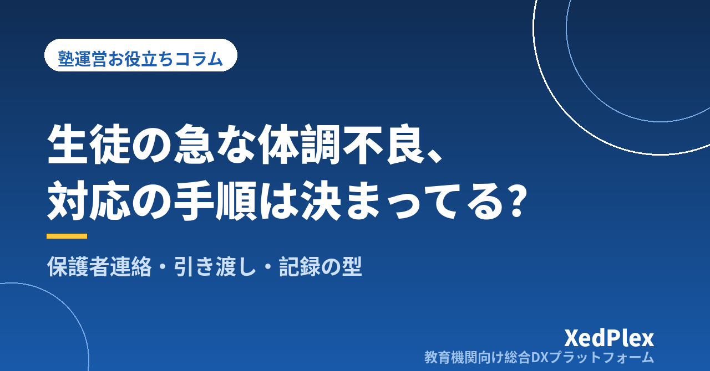

塾で生徒が体調不良・けがをしたときの対応手順｜保護者への連絡・引き渡し・記録を「その場の判断」にしない仕組み

授業中に「先生、頭が痛いです」と言われたとき。自習室で生徒が机の角に頭をぶつけたとき。塾長がひとりで教室を見ている時間帯だと、ほかの生徒の授業を続けながら、保護者に連絡し、様子を見て、迎えを待つ……と、すべてを同時に判断しなければなりません。
学校には保健室や養護教諭がいますが、個人塾には多くの場合いません。だからこそ、起きてから考えるのではなく、起きる前に手順を決めておくことが、生徒の安全と保護者の信頼を守ることにつながります。この記事では、小規模塾でも無理なく整えられる体調不良・けがへの対応の型を整理します。なお、医学的な判断については、医療機関や公的な相談窓口の情報を優先してください。
対応が「その場の判断」になると起きる3つのこと
手順が決まっていない塾では、次のようなことが起きやすくなります。
- 連絡が遅れる・つながらない：保護者の連絡先が古いまま、どちらの保護者に先に連絡するか決まっていない、といった理由で連絡が遅れます。保護者からすると「なぜすぐに知らせてくれなかったのか」という不満につながります。
- 講師によって対応が違う：塾長なら保護者に連絡する場面でも、アルバイト講師は「少し休めば大丈夫」と判断してしまうことがあります。対応の差は、後で説明するときに困る原因になります。
- 何があったか説明できない：いつ、どこで、どんな様子だったかを記録していないと、保護者や医療機関に聞かれても正確に答えられません。
裏返すと、事前に決める・手順どおりに動く・記録を残すの3つをそろえれば、誰が教室にいても同じように対応できるようになります。
事前に決めておく5つのこと
まずは平常時に、次の5つを決めて文章にしておきます。
| 決めること | 内容 | ポイント |
|---|---|---|
| 1. 緊急連絡先と連絡の順番 | 保護者の連絡先を複数、つながらないときの次の連絡先 | 「母→父→祖父母」など順番まで決めておく |
| 2. 健康面で知っておくこと | 持病・アレルギー・服薬など、塾として知っておくべき情報 | 入塾時に保護者から書面で聞き、必要な範囲で講師と共有する |
| 3. 判断の目安 | 様子を見る／迎えをお願いする／救急車を呼ぶ、の線引き | 迷ったら「重いほうに倒す」を原則にする |
| 4. 引き渡しのルール | 誰に引き渡すか、一人で帰してよいか | 体調不良時は原則として保護者の迎えか、保護者の了承を得てから帰す |
| 5. 役割分担 | 対応する人、ほかの生徒を見る人、連絡する人 | ひとりのときの動き方も決めておく |
健康に関する情報は、個人情報の中でも特に慎重な扱いが求められます。聞く項目は必要な範囲に絞り、保管場所と共有する範囲を決めておきましょう。考え方は塾が守るべき生徒の個人情報管理の基本で紹介しています。また、薬を塾の判断で飲ませない、湿布などを貼る前に保護者に確認するなど、塾が「しないこと」も決めておくと、講師が迷わずにすみます。
起きたときの対応5ステップ
実際に体調不良やけがが起きたときは、次の順番で動きます。
- 安全を確保し、様子を確認する：生徒を落ち着ける場所に移し、意識・呼吸・顔色・痛む場所などを確認します。けがの場合は、無理に動かさないことも大切です。
- 重さを判断する：下の表の目安に照らして、どの対応にするかを決めます。
- 保護者に連絡する：決めておいた順番で連絡し、状況と塾の対応、お願いしたいこと（迎えなど）を伝えます。
- 引き渡しまで見守る：迎えが来るまで、目の届く場所で様子を見ます。変化があれば保護者に追加で連絡します。
- 記録を残す：その日のうちに、時刻・状況・対応・連絡内容を記録します。
| 対応 | 目安となる状況の例 |
|---|---|
| 塾で様子を見る（保護者には連絡） | 軽い擦り傷、少し休めば元気に戻った、など |
| 保護者に迎えをお願いする | 発熱・吐き気・強い頭痛や腹痛がある、休んでも回復しない、頭や顔を打った、など |
| 救急車を呼ぶ（その後すぐ保護者に連絡） | 意識がはっきりしない、呼吸が苦しそう、けいれんしている、大量の出血がある、など |
この表はあくまで判断の入口です。迷ったときは、地域で実施されている救急相談窓口（#7119など）や、子どもの急な病気についての相談窓口（#8000）を利用する方法もあります。実施地域や受付時間は自治体によって異なるため、教室のある地域の窓口を事前に調べて、電話の近くに貼っておくと安心です。緊急性が高いと感じたら、迷わず119番に連絡してください。
軽いと判断した場合でも、保護者への連絡は省かないのがおすすめです。家に帰ってから症状が出ることもあり、「塾で何かあった」と保護者が知っているかどうかで、その後の対応が変わります。
保護者への連絡の型と文例
慌てているときほど、連絡の内容が抜けがちです。次の4点を順番に伝える型にしておきます。
- 今の状態（落ち着いている、など最初に安心できる情報があれば先に）
- 何があったか（いつ・どこで・どのように）
- 塾で行った対応
- お願いしたいこと（迎え・受診の判断など）
○○塾の△△です。○○さんが本日19時ごろから頭痛を訴え、現在は教室の奥の席で休んでいます。熱は測れていませんが、受け答えははっきりしています。少し休んでも回復しないため、お迎えをお願いできますでしょうか。折り返しのお電話をお待ちしております。状態に変化があれば、改めてご連絡いたします。
電話がつながらないときは、メッセージを残したうえで次の連絡先にかけます。連絡手段がばらばらだと、誰がいつ連絡したか分からなくなるので、塾として使う連絡手段を決めておくことも大切です。連絡手段の整理は塾の保護者連絡、講師の個人LINE頼みは危険？、緊急時の一斉連絡の考え方は台風・災害・感染症で休講するとき、塾はどう決める？が参考になります。
引き渡しのときは、口頭でも経過を伝えます。翌日以降に「その後いかがですか」とひと言連絡すると、保護者の安心につながります。
記録の残し方と再発防止
記録は、保護者への説明、保険の手続き、再発防止のすべての土台になります。次の項目を、その日のうちに残します。
- 日時と場所（何時ごろ、教室のどこで）
- 生徒の様子（訴えた内容、見た目の変化）
- 塾が行った対応と、その時刻
- 保護者への連絡の時刻・相手・伝えた内容
- 引き渡しの時刻と相手
- 対応した講師の名前
記録は生徒ごとの記録と同じ場所に残しておくと、後で経過を追いやすくなります。日々の記録の残し方は塾の生徒記録（日誌）を残す習慣と活かし方で紹介しています。
また、けがにはつながらなかったものの「ヒヤリとした出来事」も記録しておくと、事故を未然に防げます。机の角、階段、入口の段差、自習室の動線など、同じ場所で繰り返し起きていないかを月に1回見直し、配置や掲示を変えていきましょう。保護者から対応について指摘を受けたときの進め方は塾への保護者クレーム対応の手順で整理しています。
平常時の備えと講師への共有
手順を決めても、いざというときに思い出せなければ意味がありません。日頃から次の3つを習慣にしておきます。
1. 連絡先と健康情報を定期的に更新する
引っ越しや電話番号の変更、新しいアレルギーの判明など、情報は変わっていきます。新年度や面談のタイミングで、保護者に確認してもらう機会を作りましょう。
2. 手順をA4・1枚にまとめて掲示・共有する
5ステップと判断の目安、相談窓口の番号、連絡の順番を1枚にまとめ、講師がすぐに見られる場所に置きます。業務マニュアルの作り方はひとり塾長のための業務マニュアルの作り方、講師への伝え方は個人塾でもできる講師研修と指導の標準化で紹介しています。
3. 誰が教室にいるかを把握しておく
体調不良やけがは、授業中だけでなく自習中や帰宅前にも起こります。今、教室に誰がいるかがすぐに分かれば、対応も保護者への連絡も早くなります。在室の把握は小さな塾でもできる入退室管理、自習室のルールは個人塾の自習室運営、ルールはどう決める？が参考になります。送迎を行っている塾は塾・学童の送迎、安全管理はどう整える？もあわせてご覧ください。
まとめ
塾での体調不良・けがへの対応は、緊急連絡先と順番・健康情報・判断の目安・引き渡しのルール・役割分担の5つを事前に決め、起きたときは5ステップで動き、保護者には4点の型で連絡し、その日のうちに記録を残すことで、塾長ひとりでも、講師が対応する日でも、同じように動けるようになります。
まずは、教室のある地域の相談窓口の番号を調べ、在籍している生徒の緊急連絡先が最新かどうかを確認するところから始めてみてください。
この記事を書いた運営より
私たちは、個人経営・小規模の学習塾向けに、生徒管理・QRコードでの入退室記録・月次請求・保護者へのLINE/メール通知・AIによる学習支援までをひとつにまとめた教育機関向け総合DXプラットフォーム「XedPlex（ゼドプレックス）」を開発・提供しています。初期費用は0円、料金は生徒1名あたり月額300円（税込）から。生徒50名の塾なら月15,000円（税込）です。全国8つの教室で導入されており、導入塾には紹介ホームページの無料作成も行っています。機能の詳細説明はこちら。
XedPlexの詳細を見る